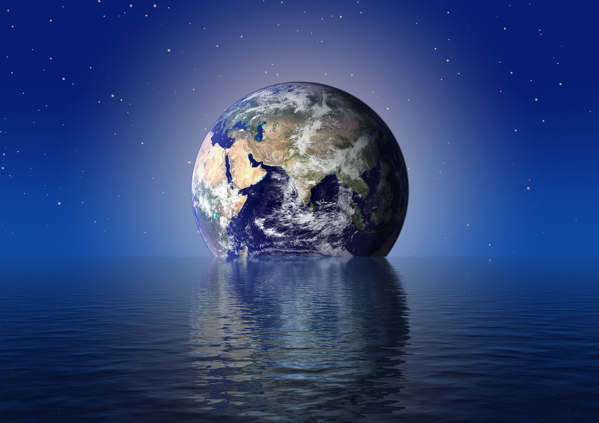

مقدمة

الأرض هي الكوكب الثالث من الشمس، وهو الكوكب الوحيد المعروف بوجود الحياة عليه. يتميز بمناخه المعتدل وتنوعه البيئي.
الخصائص
الكوكب يتكون من 70% ماء و30% يابسة. يمتاز بالغلاف الجوي الذي يحمي الكائنات الحية.
الدوران حول الشمس
الأرض تدور حول الشمس مرة كل 365.25 يوم، مما يسبب الفصول الأربعة.
الغلاف الجوي

الغلاف الجوي للأرض يتكون من 78% نيتروجين و21% أكسجين مع نسب قليلة من الغازات الأخرى.